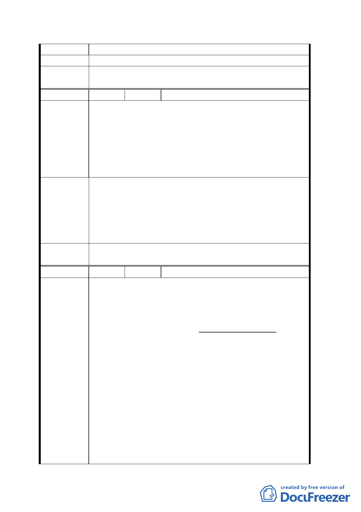

不容傷害。
建 議 辦 法 我等應擁有優先承購本建物基地土地之權。
委員會決
議
同決議一、二。
編 號 9 陳情人 李佳春
1. 廣場用地：地面上不得超過 15％建物。
文教區及社教用地：容積率為 250％。
2. 本市都市計畫是約 80 餘年前日人依人口 30 萬規
陳情理由
劃，為使公共設施用地空間合理使用，建議規劃
為青少年休閒活動教育並提昇市民生活品質。
3. 本人參考日本公共建設及收集資料提供以下建
議。
1.室內外藝文展演場所。2.民眾活動中心。3.台北
歷史館。4.防震、防火、防水災、自來水、下水道、
建議辦法
防毒、環保、交通、教育護身救人智識體驗館。5.
室內外游泳池設施。6.B1 管理中心及倉庫、B2 機車
停車場、B3 小型汽車停車場、B4 自來水蓄水池及機
電設備。7.災害及防空緊急避難設施用途。
委員會決
議
建議內容留供將來廣場規劃時參考。
編 號 10 陳情人 陳張秋月
本案中僅有十三所建築物〈位於沿貴陽街至中華路
轉角地段〉為完全合法建築物。其自始依法申請先
取得，由台北市政府核發之建築基地“土地使用權
證明書”即由台北市政府工務局核發之建築執照，
完全依法建築。申請核發土地使用權證明書時，申
請人與台北市政府之間，本於互相默約，日後日產
管理委員會出售建物基地時，建築物所有權人，當
優先承購基地。因此無需提出基地租約。當時此已
陳 情 理 由 成為通例。竣工後並依法由台北市政府建成地政事
務所，核發正式建物所有權狀，每年照繳房屋稅無
誤。民為該十三所完全合法建築物中之一的所有權
人，與理教公所一帶之眾多違章建築住戶大眾，法
律上所具備的條件顯然完全不同。今後處理本案
時，敬請惠予妥為分開，勿相混而論。茲僅對本案
為誠懇之建議及陳情如下：
1. 貼在理教公所對本案之公告，民不致有機會看
到。因民與理教公所一帶，眾多違章建築住戶大
一○